|
PCART
|
Provide utility functions for processing API calls and source files. More...
Classes | |
| class | ConditionalReturnTransformer |
| Convert conditional return statement to multi-line if-else structure 展开单行条件返回语句为多行if-else结构 More... | |
| class | UnsupportedRunCommand |
Functions | |
| def | buildRunCommand (runCommand, envPath) |
| Build subprocess argv for project run command 为被测项目运行命令构造subprocess argv. More... | |
| def | cmp (version) |
| def | departAPI (s) |
| Split API call string based on parameter passing 根据参数传递拆分API调用字符串 More... | |
| def | departAPI2 (s, separator='.') |
| Split API call string based on separator "." 根据"."拆分API调用字符串 More... | |
| def | findPythonDir (basePath) |
| Get Python interpreter path 获取Python解释器路径 More... | |
| def | get_parameter (p_string, separator=',', space=1) |
| Split parameter string into list of separated parameters 将参数字符串拆分成单个的参数 More... | |
| def | getAst (filePath, strFlag=0) |
| Get AST for code 将代码转化为Ast树 More... | |
| def | getFileName (fileName, extension) |
| Normalize file name 给文件取名字 More... | |
| def | getImportLst (filePath) |
| def | getLastAPIParameter (apiStr) |
| Get parameter(s) of the last API from the API call string 获取最后一个API参数 More... | |
| def | getRunFile (runCommand) |
| Extract the .py script filename from a run command 从运行命令中提取.py脚本文件名 More... | |
| def | getSourceCodePath (configPath) |
| Get source code path of the lib 获取库源码路径 More... | |
| def | getVersionLst (libPath) |
| 给定库的路径，获得该库的所有版本号 More... | |
| def | isDynamic (dic) |
| def | isPyLauncher (command) |
| Check whether command is Windows py launcher 判断命令是否为Windows py启动器 More... | |
| def | isPythonExecutable (command) |
| Check whether command is a Python executable name/path 判断命令是否为Python解释器名称或路径 More... | |
| def | loadConfig (configPath) |
| Load PCART's configuration file 加载PCART配置文件 More... | |
| def | normalizeRunCommand (runCommand) |
| Normalize project run command 归一化被测项目运行命令 More... | |
| def | removeParameter (s, flag=0) |
| Remove parameter(s) from API call string 去掉API中的参数部分 More... | |
| def | resolveConsoleExecutable (envPath, commandName) |
| Resolve console script executable from a virtual environment 从虚拟环境中解析console script可执行文件 More... | |
| def | resolvePythonExecutable (envPath) |
| Resolve Python executable from a virtual environment root 从虚拟环境根目录解析 Python 解释器路径 More... | |
| def | save2txt (lst, libName, runCommand, savePath) |
| Save PCART report 保存PCART报告 More... | |
| def | stripPyLauncherOption (tokens) |
| Remove version option after py launcher 去除py启动器后的版本选项 More... | |
| def | writeLine (width, s, fw) |
| Format output 格式化输出 More... | |
Provide utility functions for processing API calls and source files.
More details (TODO)
| def tool.buildRunCommand | ( | runCommand, | |
| envPath | |||
| ) |
Build subprocess argv for project run command 为被测项目运行命令构造subprocess argv.
| runCommand | The project run command |
| envPath | The virtual environment root path |
Definition at line 671 of file tool.py.
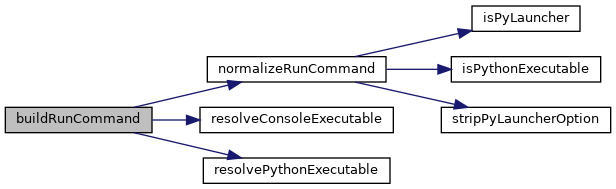
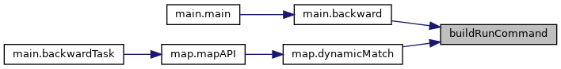
| def tool.cmp | ( | version | ) |
| def tool.departAPI | ( | s | ) |
Split API call string based on parameter passing 根据参数传递拆分API调用字符串
For example, a.b(x).c(y).d(z) --> ['a.b(x)', 'a.b(x).c(y)', 'a.b(x).c(y).d(z)'] 比如a.b(x).c(y).d(z)拆成3个API，分别是['a.b(x)', 'a.b(x).c(y)', 'a.b(x).c(y).d(z)'] 还有特殊的调用形式a.b['x'](y)
| s | The API call string |
Definition at line 234 of file tool.py.
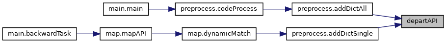
| def tool.departAPI2 | ( | s, | |
separator = '.' |
|||
| ) |
Split API call string based on separator "." 根据"."拆分API调用字符串
For example, a.b(x).c(y).d(z) --> ['a', 'b(x)', 'c(y)', 'd(z)'] 比如a.b(x).c(y).d(z)拆成4个API，分别是['a', 'b(x)', 'c(y)', 'd(z)']
| s | The API call string |
| separator | The separator simbol: . |
Definition at line 282 of file tool.py.
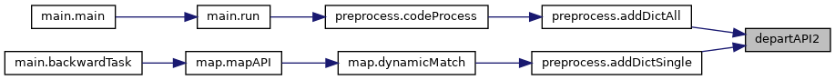
| def tool.findPythonDir | ( | basePath | ) |
Get Python interpreter path 获取Python解释器路径
| basePath | The virtual environment path |
Definition at line 706 of file tool.py.
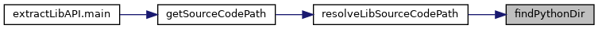
| def tool.get_parameter | ( | p_string, | |
separator = ',', |
|||
space = 1 |
|||
| ) |
Split parameter string into list of separated parameters 将参数字符串拆分成单个的参数
apiName(x,y="<bold>Hello, World!</bold>",z:int,w=(p1,p2={1,(1m,23)}),device: Union[Device, int] = None, abbreviated: bool ={'a','b'}) -> str 默认按逗号进行拆分,也可按'.'进行拆分，比如a.b.c 拆分参数的时候没有考虑到x="hello,wolrd"带冒号的情况，会错误拆成两个
| p_string | Parameter string |
| separator | The separator, ',' is the default value |
| space | Determine whether to remove the space in the parameter string |
Definition at line 30 of file tool.py.
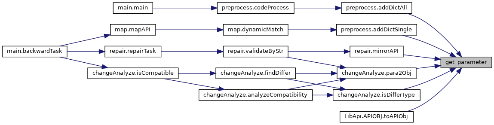
| def tool.getAst | ( | filePath, | |
strFlag = 0 |
|||
| ) |
| def tool.getFileName | ( | fileName, | |
| extension | |||
| ) |
Normalize file name 给文件取名字
| fileName | Typically, the API call string is input as the file name |
| extension | The extension of the file |
Definition at line 409 of file tool.py.
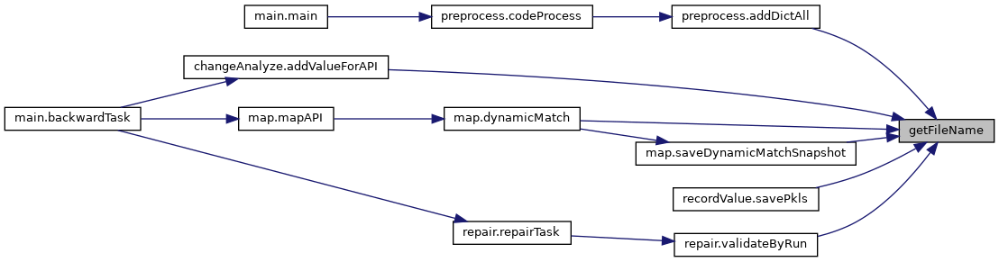
| def tool.getImportLst | ( | filePath | ) |
| def tool.getLastAPIParameter | ( | apiStr | ) |
Get parameter(s) of the last API from the API call string 获取最后一个API参数
For example, a(x).b(x=c.d(1),y=b((1,2),5),w).c(1,2,3,4) --> 1,2,3,4 比如，a(x).b(x=c.d(1),y=b((1,2),5),w).c(1,2,3,4)，获取c的参数1,2,3,4
| apiStr | The API call string |
Definition at line 204 of file tool.py.
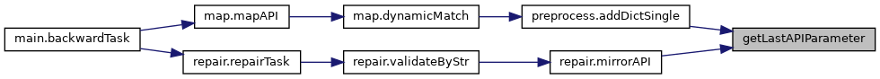
| def tool.getRunFile | ( | runCommand | ) |
Extract the .py script filename from a run command 从运行命令中提取.py脚本文件名
| runCommand | The project run command |
Definition at line 691 of file tool.py.
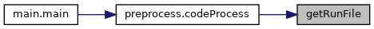
| def tool.getSourceCodePath | ( | configPath | ) |
Get source code path of the lib 获取库源码路径
f"/dataset/zhang/anaconda3/envs/3d/lib/{pythonxx.xx}/" + f"site-packages/{torch}"
| configPath | PCART's configuration file |
Definition at line 758 of file tool.py.
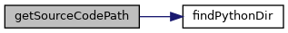
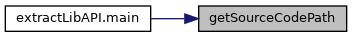
| def tool.getVersionLst | ( | libPath | ) |
| def tool.isPyLauncher | ( | command | ) |
Check whether command is Windows py launcher 判断命令是否为Windows py启动器
| command | Command name or executable path |
Definition at line 587 of file tool.py.
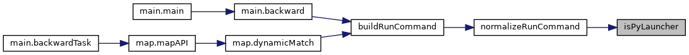
| def tool.isPythonExecutable | ( | command | ) |
Check whether command is a Python executable name/path 判断命令是否为Python解释器名称或路径
| command | Command name or executable path |
Definition at line 573 of file tool.py.
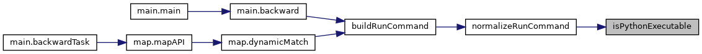
| def tool.loadConfig | ( | configPath | ) |
Load PCART's configuration file 加载PCART配置文件
| configPath | The path of configuration file |
Definition at line 554 of file tool.py.
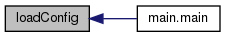
| def tool.normalizeRunCommand | ( | runCommand | ) |
Normalize project run command 归一化被测项目运行命令
只识别Python解释器结构，其余命令在执行阶段从虚拟环境解析
| runCommand | The project run command |
Definition at line 610 of file tool.py.
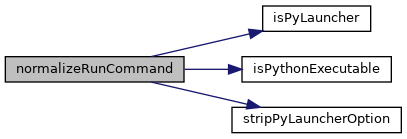
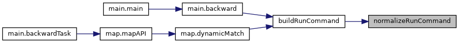
| def tool.removeParameter | ( | s, | |
flag = 0 |
|||
| ) |
Remove parameter(s) from API call string 去掉API中的参数部分
For example, a.b(x,y(2)).c(z=1).d(w=[(1,2)]) --> a.b.c.d 比如a.b(x,y(2)).c(z=1).d(w=[(1,2)])变成a.b.c.d
| s | The API call string |
| flag | Determine remove all parameters or the last parameter for the input API call: 0 for all parameters; 1 for the last parameters |
Definition at line 152 of file tool.py.
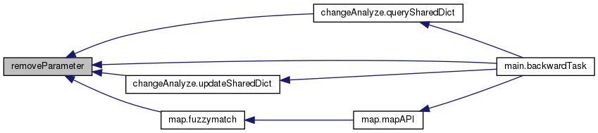
| def tool.resolveConsoleExecutable | ( | envPath, | |
| commandName | |||
| ) |
Resolve console script executable from a virtual environment 从虚拟环境中解析console script可执行文件
| envPath | The virtual environment root path |
| commandName | Console command name |
Definition at line 640 of file tool.py.
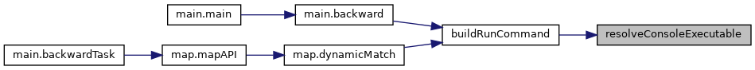
| def tool.resolvePythonExecutable | ( | envPath | ) |
| def tool.save2txt | ( | lst, | |
| libName, | |||
| runCommand, | |||
| savePath | |||
| ) |
Save PCART report 保存PCART报告
| lst | PCART's result |
| libName | The lib name |
| runCommand | The run command of the project |
| savePath | The save path |
Definition at line 461 of file tool.py.
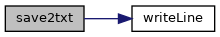
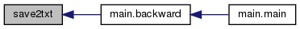
| def tool.stripPyLauncherOption | ( | tokens | ) |
| def tool.writeLine | ( | width, | |
| s, | |||
| fw | |||
| ) |
Format output 格式化输出
Specifies the maximum width for each line of string in the file. If a line exceeds this width, it is wrapped. If the wrapped line still exceeds the maximum width, the wrapping process continues. 规定文件中每行的字符串的宽度，如果超出宽度就换行写,如果换行之后还超过了最大宽度，则继续向下换行
| width | The width of each line of string |
| s | The output string |
| fw | File writter |
Definition at line 435 of file tool.py.
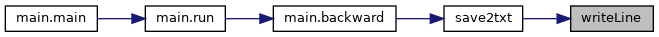